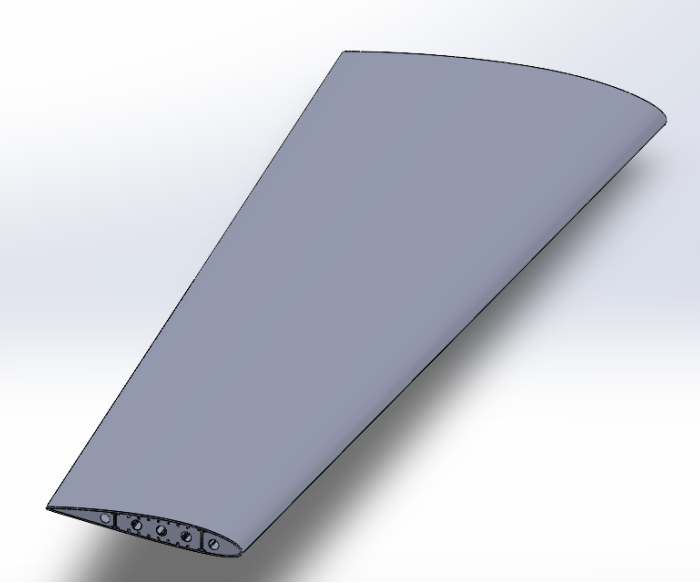
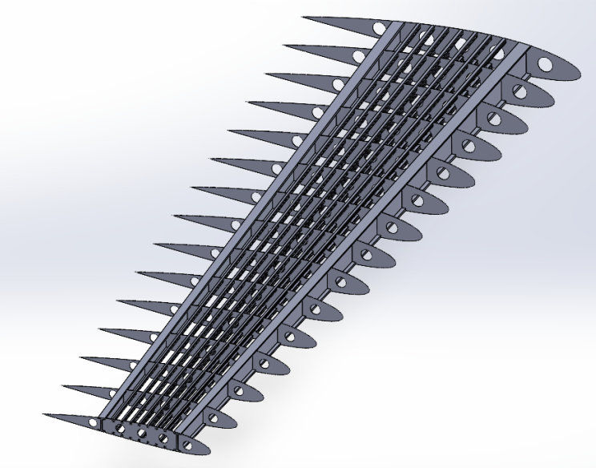
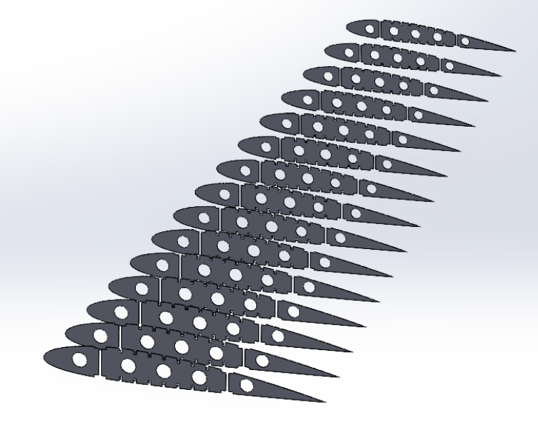
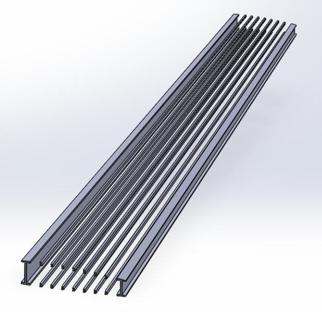
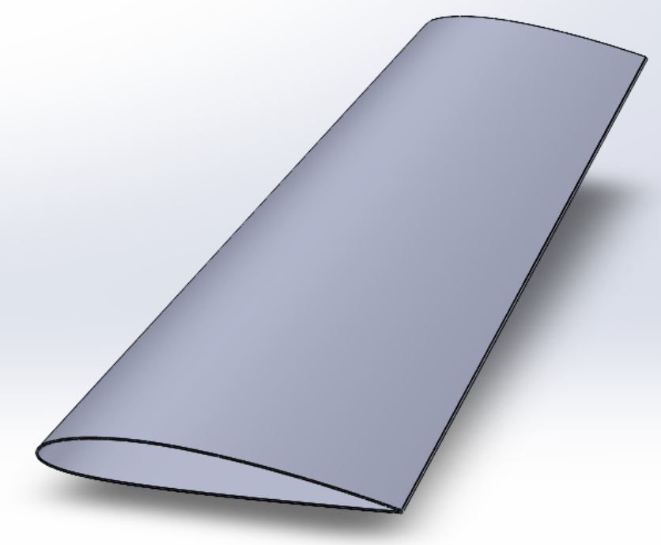
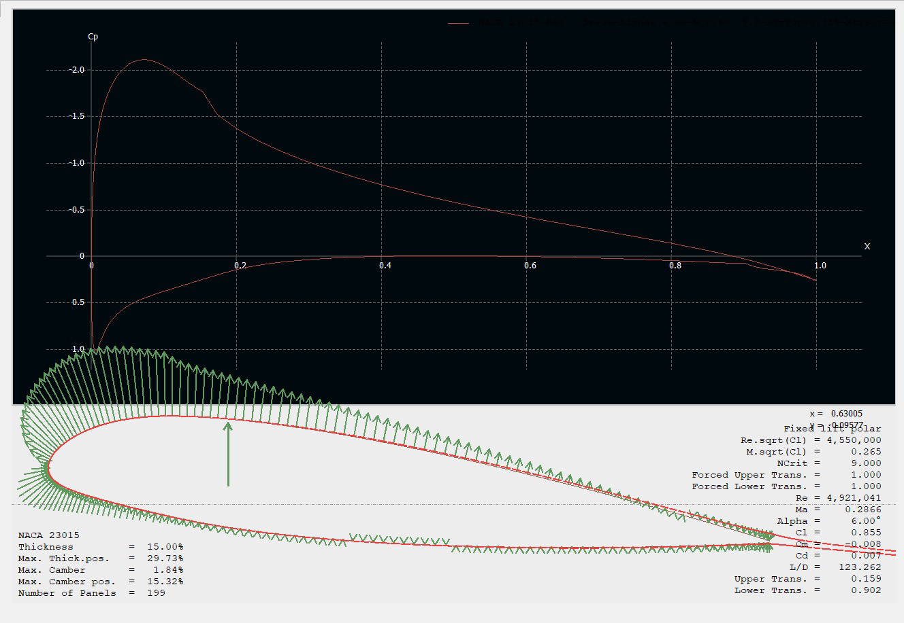
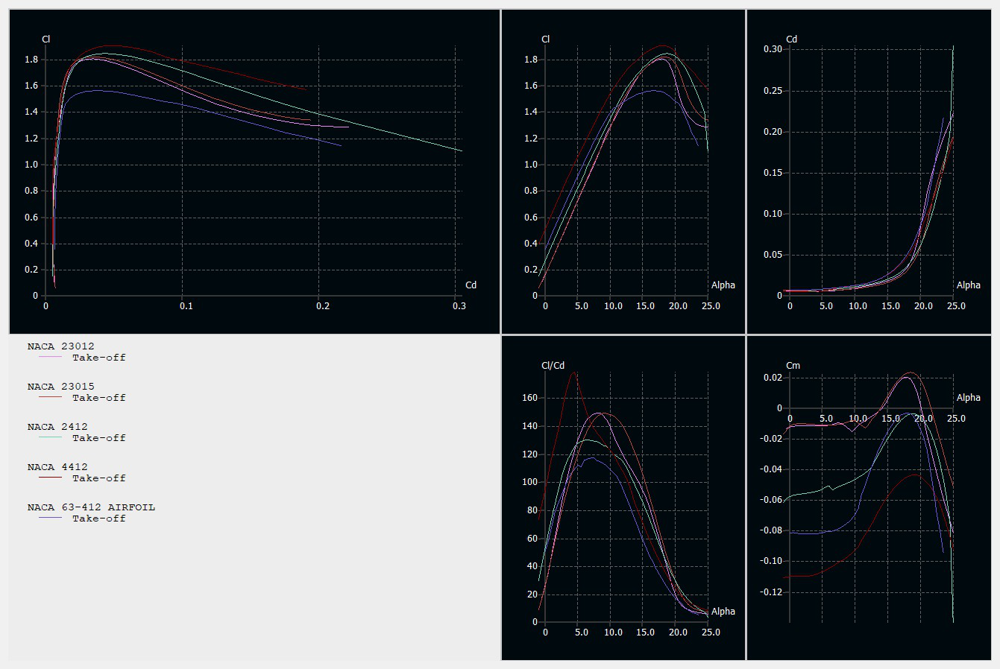

Project overview
This preliminary design study developed an aerodynamic and internal structural concept for a utility-category general aviation aircraft wing. Starting from prescribed aircraft requirements, the team assessed cruise and take-off lift demands, compared candidate airfoils, sized a tapered wing planform, designed a CAD wing structure and evaluated its spanwise lift distribution.
Airfoil selection and aerodynamic analysis
Initial research-based scoring favored NACA 2412. Subsequent XFLR5 comparisons evaluated candidate sections under cruise and take-off conditions; the team selected NACA 23015 for detailed structural CAD because of its aerodynamic characteristics and 15% section thickness, providing greater internal room for the load-bearing structure. The XFLR5 study includes pressure-coefficient plots, aerodynamic polars, and comparisons across candidate airfoils.
Wing geometric design
The preliminary design adopted a straight, tapered wing with a 0.60 taper ratio, a 1.916 m root chord, a 1.150 m tip chord, 5° dihedral and −1° geometric washout. The proposed setting angle was 2°.
Internal wing structure
The CAD semi-span model incorporates main and rear I-beam spars, C-shaped longitudinal stringers, fifteen spanwise ribs and the aerodynamic skin. The report specifies aluminium alloy 2024-T3 for the described structural components. The CAD is a preliminary configuration prepared for subsequent structural verification, rather than a documented certified or flight-tested wing.
MATLAB lifting-line analysis
Prandtl’s lifting-line method was implemented in MATLAB to estimate the finite-wing spanwise lift coefficient distribution. The report calculates a wing lift coefficient of approximately 0.395 and a take-off lift estimate of 29,432 N, versus the specified aircraft weight of 26,664 N (approximately 10% theoretical lift margin). These are preliminary design calculations, not flight-test measurements.
Design figures







Documentation
The full report contains the design assumptions, XFLR5 results, structural dimensions, CAD details, and the lifting-line derivation.
View full project report (PDF)